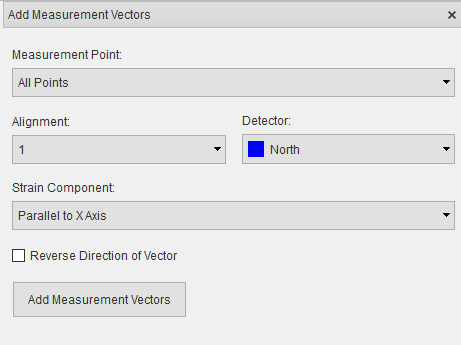
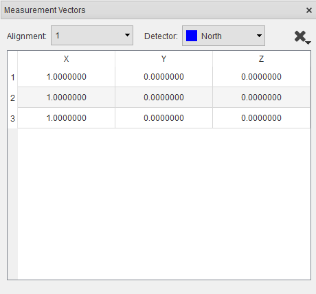

Insert Measurement Vectors¶
In the graphics window, a measurement vector will be rendered as a line originating from the associated measurement point, with a colour that indicates the detector measuring the vector.
Loading vectors from file¶
To import a Measurement vector file (.vecs), Go to Insert > Measurement Vectors > File…, browse to the location of the file and select it.
Create vectors from euler angles¶
For some experiments, it may be necessary to create measurement vectors by rotating the Q-vectors of the instrument by known matrices. This can be done by creating an Euler angle file (.angles) containing Euler angles for each measurement point, import the Euler angle file (.angles) by clicking Insert > Measurement Vectors > Euler Angles…, then browse to the location of the file and select it. A rotation matrix will be created for each points using the angles and the given order in the file and the measurement vector created with the matrix.
Select strain components¶
Click Insert > Measurement Vectors > Select Strain Component
{kind=link}
Select the measurement point to apply strain component to.
Select the detector that will measure the strain component.
Select strain component direction.
Click the Reverse direction checkbox to negate the vector if necessary.
Click Add Measurement Vector button.
Setting up multiple alignments¶
It may be advantageous to measure more than one component at a measurement point before moving on to the next measurement point. For example, using the ENGIN-X goniometer it is possible set up multiple alignments such that all three strain components are measured at each point before moving on to the next point. This option is only suitable for positioning systems with sufficient degrees of freedom. To add a new alignment:
Click the “Add new…” option in the alignment drop-down box.
Follow the steps to select stain components for the new alignment.
Manage measurement vectors¶
Measurement vectors can be viewed and managed via the vector manager. The vector manager will be opened when measurement vectors are added, if the vector manager is closed it can be opened by selecting View > Other Windows > Measurement Vectors in the menu.
{kind=link}
The vector manager can be used to delete measurement vectors, select one or more rows (multiple rows can be selected using
Shift + Left Mouse Click or Ctrl + Left Mouse Click) and click the  button then select Delete Vectors
from the menu. The deleted vector will be set to a zero vector which means the orientation of the sample would not be
changed during simulation for that measurement vector. If no row is selected, all the vectors in the selected alignment
will be deleted.
button then select Delete Vectors
from the menu. The deleted vector will be set to a zero vector which means the orientation of the sample would not be
changed during simulation for that measurement vector. If no row is selected, all the vectors in the selected alignment
will be deleted.
When more than one alignment is present, the vector manager can be used to remove an alignment. Select the alignment from
the drop-down and click the button then select Delete Alignment from the menu.
Tip
The software will only render one alignment at a time. To view a different alignment, select the alignment from the vector manager.
Export measurement vectors¶
The measurement vectors can be exported from project file to a Measurement vector file (.vecs). Click File > Export… > Measurement Vectors in the main menu, navigate to the desired save location in the file dialog, enter a name for the file and press the Save button.